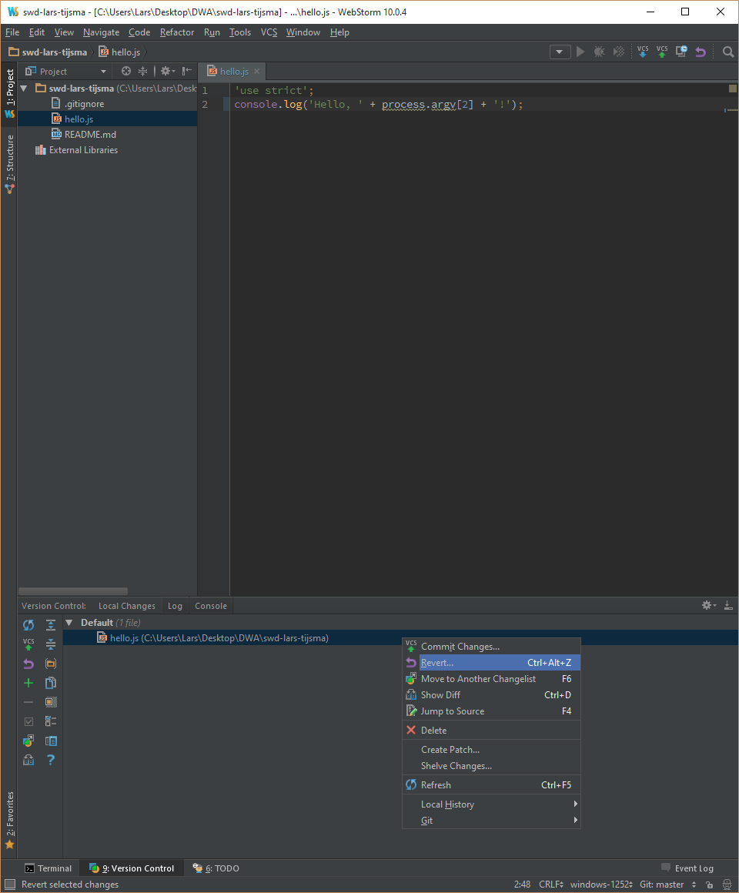
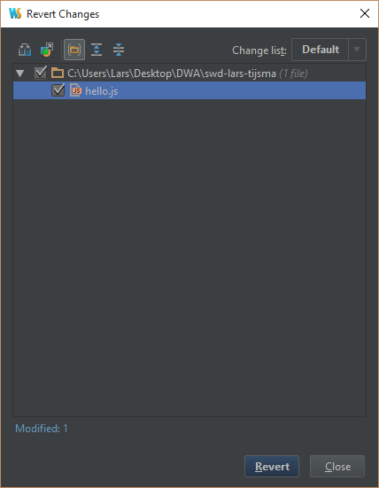
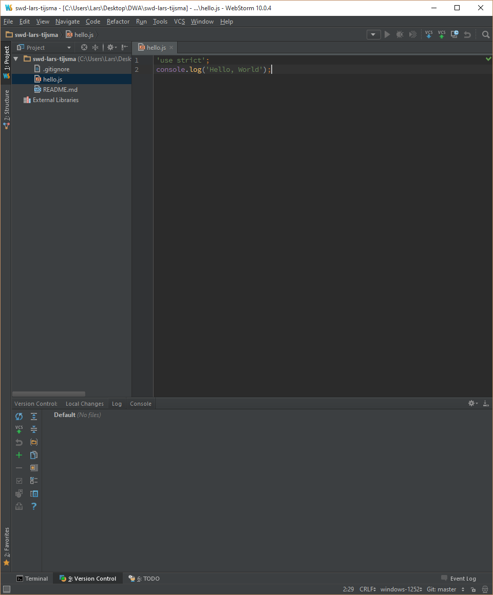

lab 8 Committing Changes
Goals
- Learn how to undo changes to the working directory by reverting to the last commit.
Revert the local change 01
You can discard all changes to the file(s) in your working directory by reverting to your last commit.
Execute:
In the Version Control window right click on hello.js and select "Revert..."
Make sure hello.js is selected and click "Revert".
Output:
You should see:
